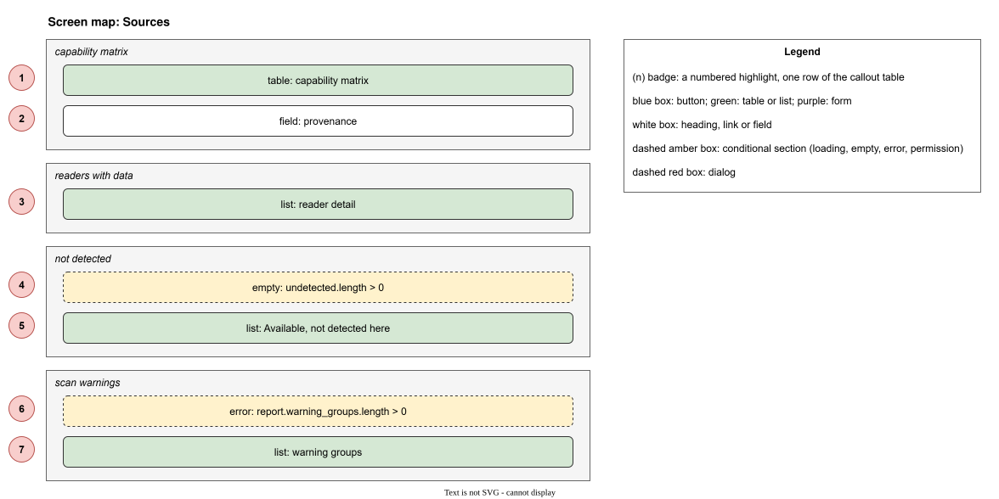

active approved inferred covers web/src/*, web/src/design-system/*
Sources Screen Map
This map shows where a reader checks which log readers found data and how far each figure can be trusted. It lets them see why a number is missing and which scan warnings need a look. It also shows that readers absent from this machine are kept apart.
What the diagram shows
- The view stacks the capability matrix, the readers with data, the readers not detected and the scan warnings
web/src/Sources.tsx:218-248. - Verified readers are listed before experimental ones in every list
web/src/Sources.tsx:36-39web/src/Sources.tsx:214-215. - The matrix draws one provenance badge per capability with a meaning in its title
web/src/Sources.tsx:78-88.
Capability and related functionality
The view is reached from App Screen and from the Flagged figure and readers line of Overview Screen. The provenance words are explained in Web Glossary Map and Web Specification.
Sources Screen screen map

Code references
| Badge | Element | Code |
|---|---|---|
| 1 | <Table capability matrix |
web/src/Sources.tsx:55-55 |
| 2 | <ProvenanceBadge provenance |
web/src/Sources.tsx:82-82 |
| 3 | <DetectedSource reader detail |
web/src/Sources.tsx:229-234 |
| 4 | undetected.length > 0 empty section |
web/src/Sources.tsx:234-234 |
| 5 | <DisclosurePanel Available, not detected here |
web/src/Sources.tsx:180-180 |
| 6 | report.warning_groups.length > 0 error section |
web/src/Sources.tsx:236-236 |
| 7 | <WarningsList warning groups |
web/src/Sources.tsx:243-243 |